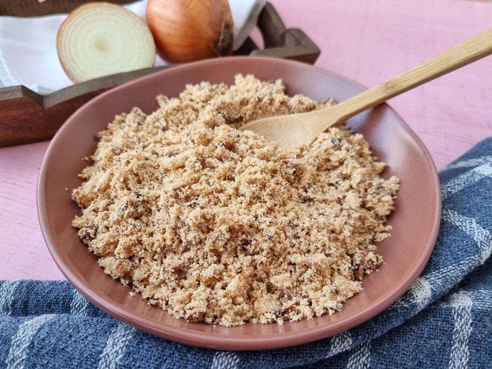
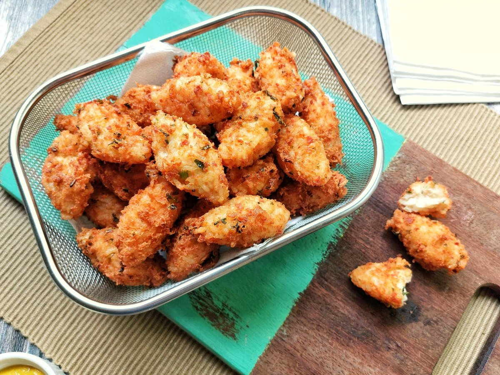

Farofa

Ingredientes
- 100ml de óleo
- 1 colher de sopa de manteiga
- 3 cebolas bem picadas
- 500 gramas de farinha de mandioca torrada
- sal e pimenta-do-reino a gosto
Modo de Preparo
- Em uma panela, aqueça o óleo e a manteiga.
- quando esquentar, adicione a cebola e refogue em fogo médio até dourar;
- Tempere com sal, pimenta-do-reino e cozinhe, mexendo por cerca de 7 minutos;
- Desligue o fogo e deixe a farofa descansar na panela tampada por alguns minutos;
Ingredientes
- 100ml de óleo
- 1 colher de sopa de manteiga
- 3 cebolas bem picadas
- 500 gramas de farinha de mandioca torrada
- sal e pimenta-do-reino a gosto
Modo de Preparo
- Em uma panela, aqueça o óleo e a manteiga.
- quando esquentar, adicione a cebola e refogue em fogo médio até dourar;
- Tempere com sal, pimenta-do-reino e cozinhe, mexendo por cerca de 7 minutos;
- Desligue o fogo e deixe a farofa descansar na panela tampada por alguns minutos;
Bolinho de arroz
Ingredientes
- 2 xícaras de chá de arroz ja cozido
- 1 ovo (levemente batido)
- 2 xícaras de chá de mussarela ralada
- 1 xícara de chá de presunto ralado
- 1/2 colher de sopa (rasa) de fermento químico em pó (fermento para bolo)
- 1/2 colher de chá (rasa) de sal
- 1 pitada de pimenta-do-reino
- 1 colher de sopa (rasa) de salsinha picadinha
- 1 colher de sopa (rasa) de cebolinha picadinha
- Óleo para fritar
Modo de Preparo
- Em um recipiente, coloque todos os ingredientes e misture bem;
- Amassa eles para ficarem bem misturados e formar uma massa;
- Pegue pequenas porções da massa e modele em formato de bolinho. Repita o processo com toda a massa;
- Em uma frigideira grande (ou uma panela) esquente o óleo e frite os bolinhos (de dois em, dois) até dourarem bem;
Pão de queijo

Ingredientes
- 400 gramas de mussarela ralada (ou queijo minas padrão)
- 500 gramas de polvilho azedo
- 100 ml de água
- 3/4 de xícara de chá de óleo
- 1 colher de café (cheia) de sal
- 2 ovo(levemente batidos)
Modo de Preparo
- Em uma leiteira (ou panela), coloque o leite, a água, o óleo, o sal, misture e leve ao fogo médio até ferver;
- Em um recipiente, coloque o polvilho azedo, despeje a mistura que ferveu e vá misturando com uma espátula (ou colher);
- Adicione os ovos e comece a misturar com as mãos;
- Acrescente o queijo e vá misturando até formar uma massa homogênea;
- Disponha em uma forma untada e leve ao forno preaquecido a 180 ºC por cerca de 30 minutos;